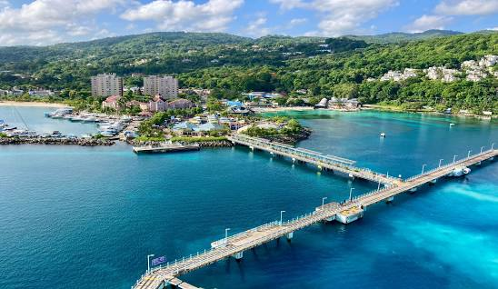
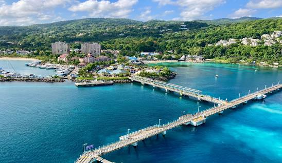
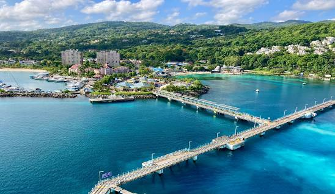

Jamaica's Natural and Cultural Paradise: Ocho Rios Ocho Rios, which translates to "Eight Rivers" in Spanish, is a thriving community on Jamaica's north coast that is well-known for its cultural and natural landmarks. TAKE A SCROLL AND LOOK AT THE WONDERFUL SPOTS LOCATED IN OCHO RIOS WITH ALL CONTACT INFO.....

Take A Look At These Spots
Dunn's River Falls
A well-known waterfall close to Ocho Rios, Jamaica,
Dunn's River Falls is a popular Caribbean tourist destination that draws thousands
of people each year. One this Sot theres places for kids and a place for teenagers to have fun. Parents
and kids can have a great time climbing the great falls safely. This Wonderful fall is Located at
Located at: Major Highway,Ocho Rios, St.Ann Jamaica
The VIP Palace Is On Of The Best 18 and Over Clubs Located In Ocho Rios Jamica For Torusit
And even residents. Its open From 12pm to 6am, Not Only It's the Best Club Its Also Affordable
And Have Cabs to take home if you are too toxicated to take yourself home.
Located at: 36 Main Steert,Ocho Rios, St.Ann Jamaica
Dolphin Cove Is one the best place in Ohco Rios you can go to interact with sea animals,
Dolphin Cove is a place were family and friends can go to enjoy the food and shows the dolphin puts on
Dolphin Cove as a reasonable price where family can buy package deals while booking there stay for the day.
Located at: Belmont Road,Ocho Rios, St.Ann Jamaica
Want a place to cool down in the awful heat in jamaica? Cool Blue is the best place to
go in ocho rios and enjoy the amazing water. Dis i mention its free? Cool Blue water is clean and free
only source that cost cash is food, however if you choose to bring your own cook food you can. Cool Blue is for
family and friends, however there is also a section for abults to enjoy the bar avaliable.
Island Village is where you find all the souvenir after your amazing trip at Jamaica. At Island Village
theres shows, open beaches and wonderful food spots with great souvenir shops with Affordable prices. There's
also a movie theater on site where is free during the night.Scroll through the night and enjoy yout time with your
family, friends or your significant one.
Located at: Turtle Beach RD,Ocho Rios, St.Ann Jamaica
 
